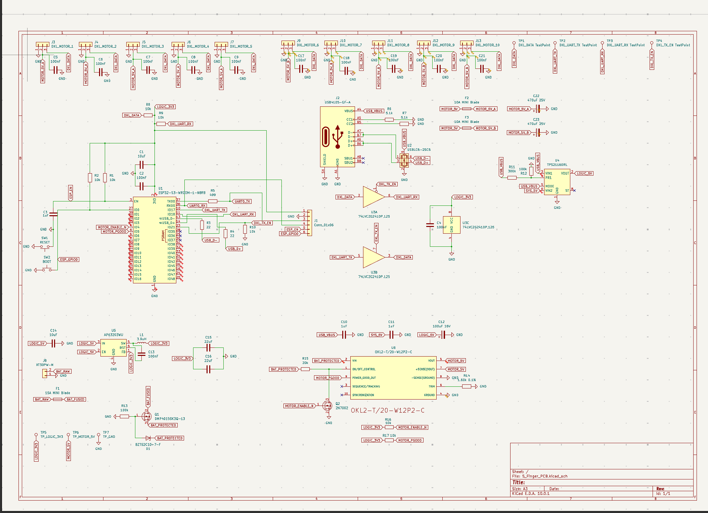

PCB Design · Power Electronics · Embedded
Five-Finger Robotic Hand ControllerIn progress
A single controller board for a tendon-driven robotic hand: an ESP32-S3 talking to ten DYNAMIXEL servos over one shared half-duplex bus, with a separate high-current motor rail so stall events never brown out the logic. USB-C for programming, XT30 for battery, and everything fused and sequenced in between.
My role I own the power schematic and battery selection — the fused and reverse-protected input, the 3.3 V logic supply, the 20 A point-of-load module feeding the two motor rails, and the enable/power-good handshake that holds the motors off until logic is up. I also assigned footprints across the board and built the BOM with real manufacturer part numbers for JLCPCB assembly.
- ESP32-S3-WROOM-1
- 10× DYNAMIXEL
- 15 A fused input
- 20 A point-of-load
- Dual 10 A motor rails
- KiCad 10 · JLCPCB
